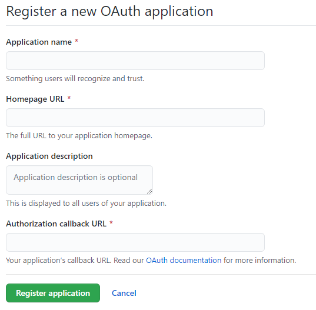
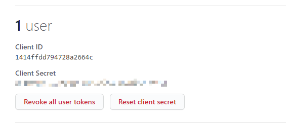
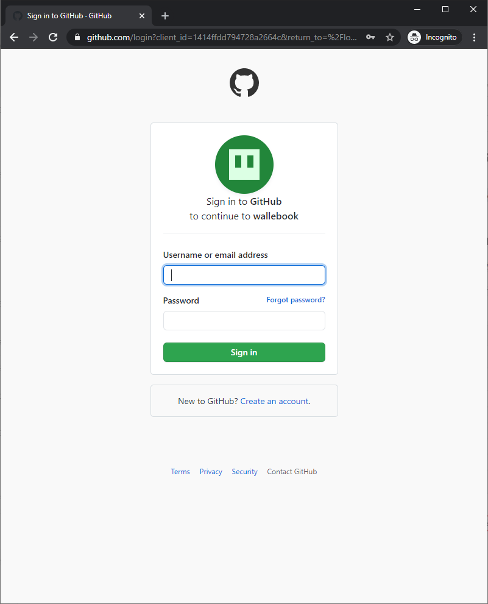
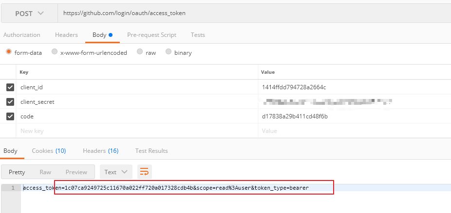
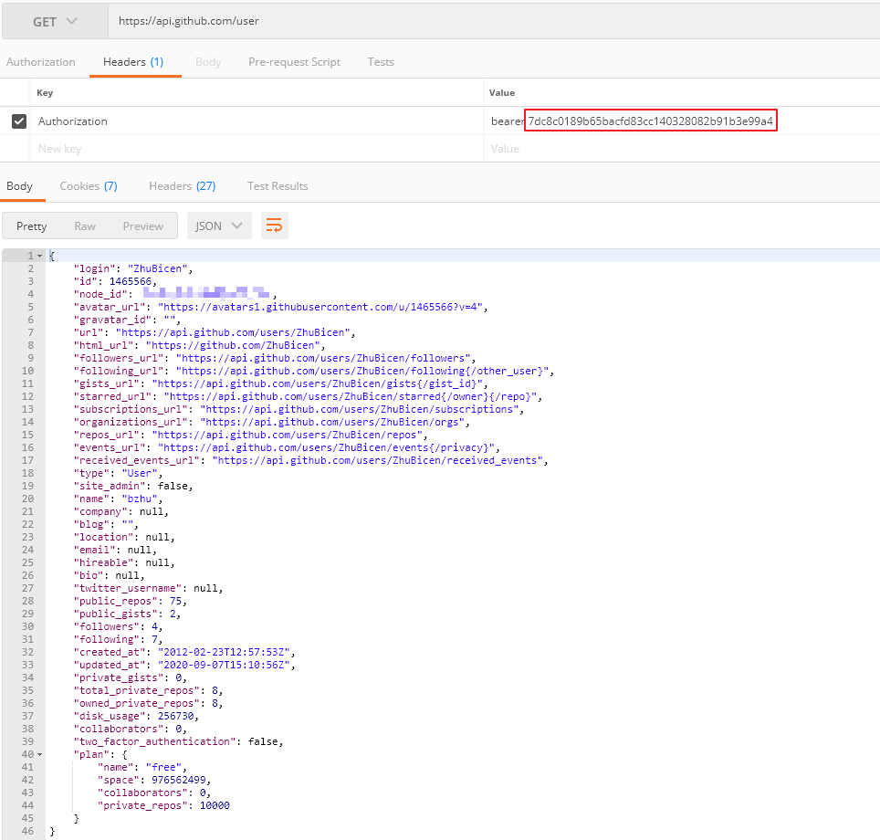

首先登录 github，依次进入 “Setting-> Developer settings -> Oauth Apps-> New OAuth App”，填写完成如下信息后，就完成了注册

然后，就可以查看到刚刚注册到的 app 的 client id 和 client secret，这就是我们用以登录 oauth2 的所有信息

接下来使用浏览器访问包含client id 信息的链接，请替换对应的 client_id (这里我们还可以指定 redirect_url，具体信息请参考文末)
https://github.com/login/oauth/authorize?client_id=1414ffdd794728a2664c
如果当前浏览器没有登录 github 帐号，将会重定向到如下的页面，以让用户登录 github:

登录完成后，你将会被重定向到你注册 app 时指定的 callback URL，我所注册的 callback URL 为 http://localhost:8080，因此被重定向到：
http://localhost:8080/?code=377f0e139706d5b5a9e4
使用重定向 URL 中的 code 我们就可以获取到 access token ，请注意我们使用的是post 方法，使用 form-data post 数据，client_secret 就是上面第二张图中的注册后的信息中可以看到

使用刚刚获取的 token 就可以获取的相应用户的信息，请注意 header 中的 Authorization 的值为 bearer + 一个空格 + access_token

另外值得注意的一点是，在第一步获取 code 的时候，还可以指定 redirect_url， 只是这个指定的 redirect_url 需要和注册 app 时指定的 CALLBACK URL 兼容。这里的兼容是指，URL 中的host 和 port要和注册 app 时指定的一致，目录要是注册 app 是指定的目录的子目录
比如在注册 app 是你指定的 callback URL 是： http://example.com/path
GOOD: http://example.com/path
GOOD: http://example.com/path/subdir/other
BAD: http://example.com/bar
BAD: http://example.com/
BAD: http://example.com:8080/path
BAD: http://oauth.example.com:8080/path
BAD: http://example.org
更多信息请参考：authorizing-oauth-apps